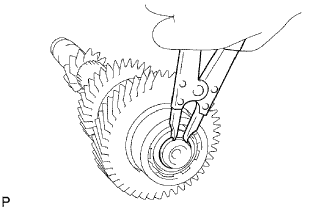
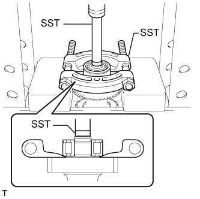

ЗАДАЮЩАЯ ШЕСТЕРНЯ > РАЗБОРКА |
| 1. УСТАНОВИТЕ ПРУЖИННОЕ СТОПОРНОЕ КОЛЬЦО ПЕРЕДНЕГО ПОДШИПНИКА ЗАДАЮЩЕЙ ШЕСТЕРНИ № 2 |
|  |
С помощью съемника стопорных колец снимите пружинное стопорное кольцо с задающей шестерни.
| 2. СНИМИТЕ ПЕРЕДНИЙ ПОДШИПНИК ЗАДАЮЩЕЙ ШЕСТЕРНИ |
|  |
С помощью SST и пресса извлеките передний подшипник из задающей шестерни.